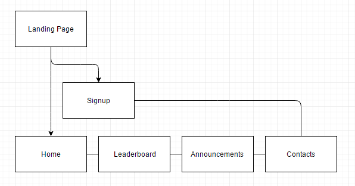

CP1406 - Assignment 1 - Project Plan
Name: Harvey Adlam
Goals
The goal of this website (slammers beach volleyball) is to improve the business of the Slammers Beach Volley ball. To gain about 100 people playing at Slammers each week, or increase customers by 50%. This site is needed in order to complete these goals. This would benefit the client as it would meet their requirements.
Success Evaluation
Slammers needs to measure the number of people who sign up and attend their events this will be the measure of success.
Target Audience
The target audience for the website are people ages 15-30 those who are still in high school or that are at least young. The website was designed with a simple clean aesthetic to appeal to those audiences as that is how most websites today are styled.
Site Flowchart

Site Flowchart
GitHub Repository
https://github.com/Harvey-Adlam/a1/
Enter your repo name and edit the URL here. Make sure your GitHub repo is public.